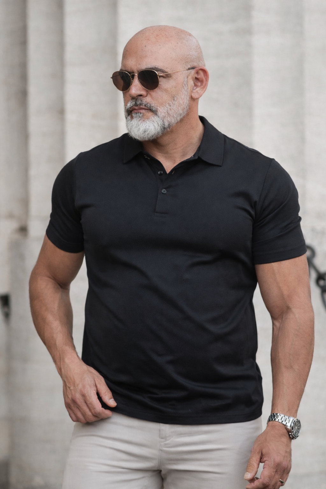

I build elegant, highly intentional learning systems that prioritize accessibility, digital clarity, and robust learner interaction models at McLennan Community College.
Explore Course Modules
A highly tactile grammar learning environment scaffolded with embedded Text-To-Speech features tailored for low-level reading accessibility profiles.
Launch Interactive Module →Transforming the standard static institutional roadmap into a scannable dashboard environment containing an interactive GPA/Grade evaluation engine.
View Canvas Matrix →Clean modal interfaces constructed to break complex institutional guidelines down into accessible, step-by-step milestones.
Review Architecture Plan →Building semantic paths ensuring learners of all cognitive backgrounds parse technical instruction quickly and accurately.
Replacing passive reading loops with interactive text token matching and immediate visual feedback engines.
Stripping away wordy construction models to deliver clean, highly readable course layouts optimized for student retention.